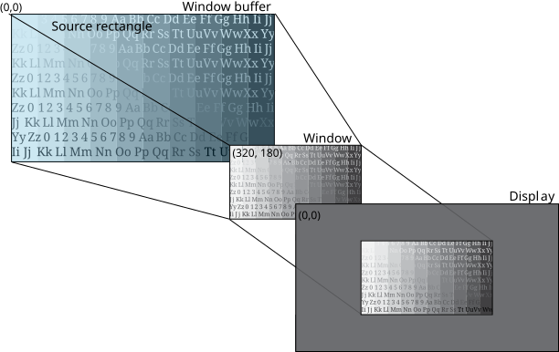

To zoom out from the parent of a window, you can resize the window to be smaller.
Screen uses the default position of (0,0) as the top left corner of your window,and your display. To zoom out as the parent of the window, simply make your window smaller.
Typically, the parent window will set only the window's size and position; the owner of the window is responsible for the properties related to the window buffer and the source rectangle. In this example the window buffer and source rectangle sizes are set for the purpose of showing their sizes. Consider the following properties:
| Property | Window | Value |
|---|---|---|
| SCREEN_PROPERTY_SIZE | Parent | 640x360 |
| SCREEN_PROPERTY_POSITION | Parent | (320, 180) |
| SCREEN_PROPERTY_BUFFER_SIZE | Owner | 1280x720 |
| SCREEN_PROPERTY_SOURCE_SIZE | Owner | 1280x720 |
To set these properties, use the corresponding window property with the Screen API function, screen_set_window_property_iv():
screen_window_t screen_win; /* your window */
int win_size[2] = { 640, 360 }; /* size of your window */
int pos[2] = { 320, 180 }; /* position of your window */
int size[2] = { 1280, 720 }; /* size of your window buffer and source rectangle */
...
screen_set_window_property_iv(screen_win, SCREEN_PROPERTY_SIZE, win_size);
screen_set_window_property_iv(screen_win, SCREEN_PROPERTY_POSITION, pos);
SCREEN_PROPERTY_BUFFER_SIZE and SCREEN_PROPERTY_SOURCE_SIZE are owner window properties. Typically, your parent sets the window's size and position only.

The source rectangle is usually the same size as the window buffer. And, in this case, the size of your window is smaller than that of the window buffer. Therefore, the content of the window buffer within the source rectangle is scaled down to fit the window size. This scaling provides the appearance of zooming out from your original source image.
The size of your window is smaller than that of your display. Therefore, in this case, the display area that's not occupied by the window is filled with the display background color (gray, in this case). The window position is set to (320, 180) so that it appears in the center of the display.